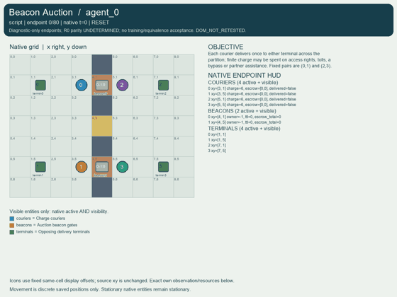
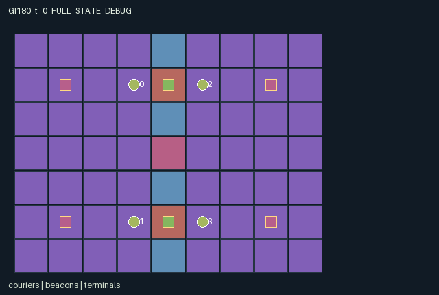

GI180 / SPATIAL
信标拍卖
角色竞价获取临时闸门与收费权，托管、退款和真实通行费改变伙伴的有限能量与可选路线。
Original saved demonstration
Recorded native state, often authored scripts or interventions; information scope and failures are preserved in the original provenance. This is a saved demonstration, not live browser play.

Release verification episode
Untrained uniform legal actions. Actual JAX state sampled along the full original episode; full-state debug camera. No human performance or learning claim.

Run this game
crucibles play --game 180
Start Python locally, then open the address printed by the terminal. Installation, multiplayer, takeover and keyboard controls →
Objective, rewards & ending
Exact task contract
{
"objective": "Each courier delivers once to either terminal across the partition; finite charge may be spent on access rights, tolls, a bypass or partner assistance. Fixed pairs are (0,1) and (2,3).",
"natural_termination": "All four parcels delivered; otherwise H=80 truncation. Pending escrow and rights remain in the terminal state without automatic refunds.",
"interaction": "Spatially committed bids clear with delay, transfer temporary gate and toll rights, and change the prices and options faced by peers. Two partner-owned sites enable a physical relay action between their actual locations.",
"observation_access": "Positions, map, charge, bid escrows, rights, lifetimes, terminals, spent-charge total and delivery receipts are public. Only a role sees its two private terminal values. The scene omits value attributes; private_visible is the exact identity permission mask."
}Declared per-step reward bounds: -0.1 to 6.25. Observability: partially_observable.
Rules
- Two fixed pairs (0,1) and (2,3) compete around two physical beacon gates, plus a public bypass that burns two charge per entry.
- Nearby bids lock one or two liquid charge per action. Every fourth transition, inactive sites award the highest accumulated bid; ties use the public rotating agent rank.
- Losing escrow is refunded in full; the winner payment is consumed. Rights last six following movement transitions, then expire. No bids are accepted while rights are active.
- Movement uses old rights. The owner pair enters for free; a rival pays one charge to the owner. Anyone already on an expired gate may leave.
- An adjacent partner may receive two charge. Owning both sites as a pair enables a one-charge relay between their actual positions when the destination is empty.
- Delivery values are private, bids public. AUTHOR SOURCE ONLY: no clearing, conservation, native replay, animation or learned strategy has been numerically tested.
Original mechanism document (historical status wording retained)
# Beacon Auction Status: AUTHORED_NOT_EXECUTED. Original source attempt 00 in the train-only prospective stream. The four supported controlled-role counts and dimensions belong to this batch interface, not a universal game quota. Native A/O/U/H = 4/114/10/80. Source SHA-256: `f86308ea53c8962a99ee7ee2bba0038550c9f3b13858411f8edbd96b2bcab05a`. ## Implemented rules and transition order The 9x7 partition has auction gates at (4,1),(4,5) and an always-available charge-burning bypass at (4,3). Fixed partners are (0,1) from the west and (2,3) from the east. Everyone starts with six liquid charge; total conserved charge is 24 including escrow and consumed charge. Movement costs no charge on ordinary floor. Each agent has independently sampled private delivery values 2..5 for north/south terminals on the opposing side. All charge, geometry, bids, rights and clocks are public. Agents can help after delivering, but cannot deliver a second time. A bid of one or two charge requires distance at most one from an inactive site and sufficient old liquid charge. Bids accumulate in an agent-by-site public escrow array. Clearing occurs after the transition when next_t is divisible by four. At each eligible site, highest accumulated bid wins; equal bids use ascending (agent_id - (next_t//4 modulo 4)) modulo 4. A positive bid always beats every zero bid. Losers receive the full escrow refund. The winner payment moves to spent_charge and all that site escrow clears. The winner becomes owner with ttl six. Bidding is disabled while old ttl is positive. Rights count down after movement; the last old tick still grants access, and expiry removes ownership. Pending escrow is not forcibly refunded at time-limit termination. Movement checks old rights and old occupancy. Entering a live gate is free for the owner pair; a rival must transfer one liquid charge to the actual owner. Unowned gates block new entry; existing occupants can wait or exit. Entry into the neutral bypass burns two charge. Competing empty destinations select the lowest id; old occupied destinations forbid swaps. An old-adjacent fixed partner can receive two charge, with simultaneous conservative gifts. A courier standing on a beacon can relay to the other beacon when both are live and owned by its pair, the exit is old-empty and it has one charge. Relay burns one charge. This is an explicit movement edge between two native physical sites. Ordering is old-mask validation, movement and old-right tolls, partner gifts, escrow commitments, old-right countdown, clearing and refunds, then delivery bookkeeping. Affordability is always tested on old resources, so same-step incoming transfers never authorize a previously unaffordable action. Reward is own delivered private value plus one quarter of the partner same-step delivery value, minus 0.02 times the amount committed in this step and travel charge burned. The bid effort penalty is not refunded even when financial escrow is refunded; tolls change charge without direct reward transfer. Four deliveries terminate, otherwise H=80. Charge+escrow+spent_charge=24 is a source-derived conservation claim awaiting execution. ## Action and observation permissions Movement rejects walls, bounds and old occupied cells. Entering an active gate is free for the owner pair; rivals need one charge, transferred to the owner. The unowned gate rejects new entry. Bypass entry requires two charge. Bid requires at most one-cell distance, inactive rights and sufficient old liquid charge. Sharing requires adjacent fixed partner; relay requires standing on a beacon, both rights held by the own pair, one charge and an old-empty destination. Delivered actors may still help; only deliver is disabled. Joint terminal permits only wait; all invalid actions become wait. Positions, map, charge, bid escrows, rights, lifetimes, terminals, spent-charge total and delivery receipts are public. Only a role sees its two private terminal values. The scene omits value attributes; private_visible is the exact identity permission mask. The manifest covers every returned flat observation column and every literal reset-state key. All state leaves are declared as fixed-shape bool/int32/float32. Signed small integer fields use int32 losslessly. The uint32 reset key is trusted provenance and is not copied into state; its literal private-value distribution is preserved. No map or entity is made public just to render it. Private values are omitted from entity attributes and available only through the self observation fields. Local dust events are not broadcast as global scene events. Declared observation bounds are [0,1]; reward bounds are [-0.1,6.25]. These are interface bounds, not performance gates, and have not been tested with numerical trajectories. ## Partner-dependent strategy hypotheses A pair can split purchases across sites to obtain a complementary relay edge, concentrate funds on one gate, donate charge to a nearby partner, or rely on a rival gate and pay its toll. Delayed commitment permits overbidding, waiting for public bids, or declining an auction for the neutral bypass. Ties are predictable from the public clock, not random or hidden. Private terminal preferences can justify a longer route, a bid at one site, or helping a partner complete first. Finite charge and expiry make early spending constrain future access; no equilibrium or learned strategy is asserted. ## Original scripts and paired intervention Literal seed 1806199 was chosen without calling reset or searching seeds. `playthrough.json` contains fixed integer joint-action scripts and a one-component paired intervention. Their intended events and legality are source reasoning only. Agent 2 alone changes wait to a two-charge late bid. At the first clearing the literal rotating tie rule predicts a different north-site owner. Agent 0 then enters the same gate, so its refund, toll event and later liquid charge should differ. No clearing or effect has been executed. A paired suffix may be compared as actual observations, native state and legal masks only after a separately authorized frozen-source replay. This package contains no trace, observed effect magnitude, acceptance score or proof of success. ## Terminal and rendering boundary A nonterminal raw call advances t exactly once. Natural completion takes priority at H; truncated = (next_t >= H) and not terminated. done equals terminated or truncated. An already-done raw call preserves all state, observations, clock and original causes and returns zero reward with all role dones true. The raw kernel never resets; outer autoreset belongs to trusted integration. The declarative scene binds actual native entity positions, active/visibility masks, public attributes and event levels to exact source/manifest hashes. It supplies a usable state mapping for later rendering, not recorded animation. Tether midpoints, dust cells, rights and bridge components derive from actual causal state where present. A privileged full-state view must be labelled separately from each role view. The array interface is GeneratedEnv reset/observe/legal_actions/raw_step. A JaxMARL agent-keyed adapter with __all__, real trajectory capture, animation playback/pause/step, R0 and any learning work remain independent integration responsibilities; none is silently added to these seven source-package files. ## Literal source evidence - `candidate.py:66`: `can_bid = jnp.any(near & (s['ttl'][None, :] == 0), axis=1)` - `candidate.py:61`: `permission = jnp.any(matches & owned & (free | (s['charge'][:, None, None] >= 1)), axis=2)` - `candidate.py:101`: `tolls = entered & (s['ttl'][None, :] > 0) & (s['owner'][None, :] // 2 != team[:, None])` - `candidate.py:109`: `shared = 2 * (a == 7).astype(jnp.int32)` - `candidate.py:114`: `escrow = s['escrow'] + jax.nn.one_hot(site, 2, dtype=jnp.int32) * bid[:, None]` - `candidate.py:121`: `cleared = (jnp.mod(t, 4) == 0) & (ttl == 0) & (jnp.sum(escrow, axis=0) > 0)` - `candidate.py:122`: `priority = jnp.mod(ids - jnp.mod(t // 4, 4), 4)` - `candidate.py:126`: `refund = jnp.sum(jnp.where(cleared[None, :] & ~winners, escrow, 0), axis=1)` - `candidate.py:130`: `owner = jnp.where(cleared, winner, owner)` - `candidate.py:136`: `reward = value + 0.25 * value[mate]` - `candidate.py:149`: `public = jnp.concatenate([jnp.array([s['t'] / 80.0]),` - `candidate.py:161`: `n, reward = jax.lax.cond(state['done'],` Method locations from stdlib AST only: refresh 12-13, reset 15-49, legal_actions 51-81, advance 83-146, observe 148-158, raw_step 160-165. ## Allowed reference use and source-only checks The supplied JaxMARL README was read for its parallel agent-keyed API and __all__ convention. The supplied PureJaxRL README was read to distinguish end-to-end algorithm implementations from a game library. No upstream implementation or game rules were copied. The Pgx README, Craftax README and Craftax PPO-RNN baseline were byte-read and hashed for integrity only; their contents were not semantically used. Craftax game mechanics, Pgx board APIs and PureJaxRL algorithm code are not claimed as implementations of these games. All exact paths, bytes, hashes and actual use are recorded in author_input_freeze.json. The supplied AST whitelist accepted this final source, and supplied manifest/scene validators accepted data-only metadata. Class constants, literal reset-key inventory, action vector dimensions/ranges, one-component branch changes and SHA links were checked without importing or executing candidate code. These checks do not establish runtime shape/dtype correctness, eager/JIT/vmap parity, action-mask validity along trajectories, conservation, causality, solvability, strategic richness, non-isomorphism, animation, training, adaptation or transfer. Zero, negative, failed and indeterminate future results remain admissible.
Commands
Roles & abilities
agent_0 west pair member 0
agent_1 west pair member 1
agent_2 east pair member 2
agent_3 east pair member 3
Observation permissions
Training receives only the original observation rows. Role cameras use declared visibility; debug cameras are explicitly marked. Local benchmark records log debug exposure and role takeover history.
Exact observation layout
[
{
"slice": [
0,
2
],
"meaning": "Own private north/south delivery values/5",
"visibility": "self"
},
{
"slice": [
2,
3
],
"meaning": "Clock/80",
"visibility": "public"
},
{
"slice": [
3,
11
],
"meaning": "Four public courier x/8,y/6 pairs",
"visibility": "public"
},
{
"slice": [
11,
15
],
"meaning": "Liquid charges/24",
"visibility": "public"
},
{
"slice": [
15,
23
],
"meaning": "Public agent-major two-site escrow table/24",
"visibility": "public"
},
{
"slice": [
23,
27
],
"meaning": "Persistent parcel-delivered flags",
"visibility": "public"
},
{
"slice": [
27,
31
],
"meaning": "Two beacon x/8,y/6 pairs",
"visibility": "public"
},
{
"slice": [
31,
33
],
"meaning": "Beacon owners encoded (owner+1)/4",
"visibility": "public"
},
{
"slice": [
33,
35
],
"meaning": "Beacon remaining transitions/6",
"visibility": "public"
},
{
"slice": [
35,
37
],
"meaning": "Total site escrows/24",
"visibility": "public"
},
{
"slice": [
37,
45
],
"meaning": "Four terminal x/8,y/6 pairs",
"visibility": "public"
},
{
"slice": [
45,
108
],
"meaning": "Public y-major map values/3",
"visibility": "public"
},
{
"slice": [
108,
109
],
"meaning": "Joint done flag",
"visibility": "public"
},
{
"slice": [
109,
110
],
"meaning": "Total irreversibly consumed charge/24",
"visibility": "public"
},
{
"slice": [
110,
114
],
"meaning": "Own role identity one-hot",
"visibility": "self"
}
]Entity visibility & attributes
[
{
"id": "couriers",
"kind": "agent",
"count": 4,
"position": [
"pos"
],
"active": [
"agent_active"
],
"visibility": [
"agent_visible"
],
"attributes": [
{
"state_path": [
"charge"
],
"meaning": "Liquid finite charge",
"display": "bar"
},
{
"state_path": [
"escrow"
],
"meaning": "Public committed bids [north,south]",
"display": "number"
},
{
"state_path": [
"delivered"
],
"meaning": "Own parcel delivered",
"display": "flag"
}
]
},
{
"id": "beacons",
"kind": "gate",
"count": 2,
"position": [
"beacon_pos"
],
"active": [
"beacon_active"
],
"visibility": [
"beacon_visible"
],
"attributes": [
{
"state_path": [
"owner"
],
"meaning": "Current rights owner; -1 unowned",
"display": "category"
},
{
"state_path": [
"ttl"
],
"meaning": "Remaining usable transitions",
"display": "bar"
},
{
"state_path": [
"escrow_total"
],
"meaning": "Pending public charge in this auction",
"display": "bar"
}
]
},
{
"id": "terminals",
"kind": "landmark",
"count": 4,
"position": [
"terminal_pos"
],
"active": [
"terminal_active"
],
"visibility": [
"terminal_visible"
],
"attributes": []
}
]Actual verification & provenance
Per-game execution receipt
{
"game": "gi180",
"status": "PASS",
"verification_revision": 2,
"source_sha256": "f86308ea53c8962a99ee7ee2bba0038550c9f3b13858411f8edbd96b2bcab05a",
"seed": 20261101,
"runtime": {
"jax": "0.4.38",
"numpy": "1.26.4",
"devices": [
"TFRT_CPU_0"
]
},
"dimensions": {
"num_agents": 4,
"observation_size": 114,
"num_actions": 10,
"max_steps": 80
},
"checks": {
"eager_reset": {
"status": "PASS",
"seconds": 1.120159387588501
},
"observation_spaces_legal_masks": {
"status": "PASS",
"seconds": 2.370715379714966
},
"eager_step": {
"status": "PASS",
"seconds": 1.107680320739746
},
"jit_reset": {
"status": "PASS",
"seconds": 0.16880536079406738
},
"jit_step": {
"status": "PASS",
"seconds": 0.49352598190307617
},
"eager_jit_integer_parity_float_measurement": {
"status": "PASS",
"seconds": 0.0015079975128173828
},
"jit_vmap_reset": {
"status": "PASS",
"seconds": 0.8264741897583008
},
"jit_vmap_step": {
"status": "PASS",
"seconds": 0.9754459857940674
},
"outer_autoreset_api": {
"status": "PASS",
"seconds": 1.5848708152770996
},
"full_original_horizon_episode_and_render": {
"status": "PASS",
"seconds": 1.3753876686096191
}
},
"human_scores": null,
"browser_controls": "PENDING",
"failures": [],
"elapsed_seconds": 10.556676864624023,
"float_parity_max_abs": 5.960464477539063e-08,
"numerical_parity": "UNDETERMINED_NONZERO_FLOAT_DIFFERENCE",
"raw_terminal_absorbing": "PASS",
"terminal_outer_reset": "PASS",
"episode_steps": 80,
"scripted_random_returns": [
4.9400000013411045,
1.1900000013411045,
-0.13999999687075615,
-0.11999999731779099
],
"terminal": true,
"demo_information": "FULL_STATE_DEBUG",
"demo_frames": 28,
"render_roles_checked": 4
}Chromium control verification
{
"game": "gi180",
"status": "PASS",
"human_scores": null,
"engineering": true,
"checks": [
"catalog_selected_and_real_native_reset",
"keyboard_native_direction_command",
"dom_queue_and_native_step",
"second_participant_ownership_and_native_joint_step",
"all_roles_individually_controllable_no_role_cap",
"explicit_debug_camera",
"release_to_pure_ai_without_reset",
"close_session_preserves_log"
],
"ui_sha256": "96243f9de144b80b5e20a114330e2206bdcd58d3efc9c6f13bbc08b95cacc14d",
"keyboard_action_id": 1,
"seconds": 5.932677507400513
}Original identity and file hashes
{
"id": 180,
"key": "gi180",
"title": "信标拍卖",
"summary": "角色竞价获取临时闸门与收费权，托管、退款和真实通行费改变伙伴的有限能量与可选路线。",
"tags": [
"通行竞价",
"临时权利"
],
"family": "spatial",
"dimensions": {
"num_agents": 4,
"observation_size": 114,
"num_actions": 10,
"max_steps": 80
},
"source_sha256": "f86308ea53c8962a99ee7ee2bba0038550c9f3b13858411f8edbd96b2bcab05a",
"manifest_sha256": "56a2f193f4a9d4636c11526118a323aee632814c3bd7cf2139ed1a31052d2cd3",
"files": [
{
"file": "candidate.py",
"sha256": "f86308ea53c8962a99ee7ee2bba0038550c9f3b13858411f8edbd96b2bcab05a",
"bytes": 9953,
"origin": "work/exp_2/game_incubator_v3/community_games222_225_visualization_root222_v1/native154_candidate/registry/v2/games/game-v3-00180/candidate.py"
},
{
"file": "manifest.json",
"sha256": "56a2f193f4a9d4636c11526118a323aee632814c3bd7cf2139ed1a31052d2cd3",
"bytes": 13357,
"origin": "work/exp_2/game_incubator_v3/community_games222_225_visualization_root222_v1/native154_candidate/registry/v2/games/game-v3-00180/manifest.json"
},
{
"file": "scene.json",
"sha256": "35d2f2964aface785561aa4a19d4344b654030a5ee1de35820afec5de1b3dbbf",
"bytes": 6751,
"origin": "work/exp_2/game_incubator_v3/community_games222_225_visualization_root222_v1/native154_candidate/registry/v2/games/game-v3-00180/scene.json"
},
{
"file": "mechanism.md",
"sha256": "88284b489894618b799772dba3dc5374b4ff4f39d7a816fb0c6982a0967fdb57",
"bytes": 9870,
"origin": "work/exp_2/game_incubator_v3/sources/game-v3-00180/attempt_00/mechanism.md"
},
{
"file": "playthrough.json",
"sha256": "9b91043dea6cb95f14b4e7044b58a3ebcd6ba0cc5e79c7329b85138f7b0ce1ba",
"bytes": 3811,
"origin": "work/exp_2/game_incubator_v3/sources/game-v3-00180/attempt_00/playthrough.json"
}
],
"original_status": "NATIVE154_REFERENCE",
"original_saved_replay": true,
"release_validation": "PASS",
"human_scores": null,
"browser_validation": "PASS"
}